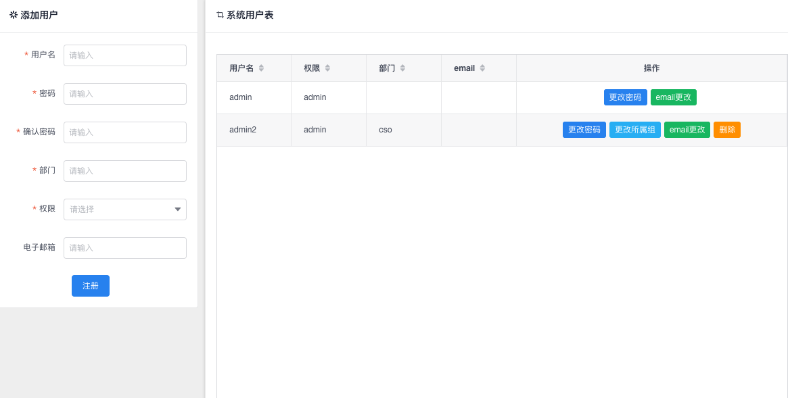

Dashboard

主要功能:
-
to-list
-
各项数据展示
-
站内信入口
-
锁定账户，变换主题及全屏

注意事项:
to-list仅支持15个字的内容
我的工单

主要功能:
- 查看该账户下提交的工单信息
注意事项:
每条工单都拥有自己的详细信息。点击详细信息后可以查看该工单提交SQL的信息
同意状态的工单 可以点击详细信息后查看回滚语句并重新提交工单
驳回状态的工单 可以点击详细信息后重新编辑SQL语句并重新提交(更改表结构语句不可编辑)
审核状态的工单 点击详细信息后可以撤销工单
进行中的工单 不可进行任何操作
表结构修改

主要功能:
- 根据选择条件自动生成表结构更改语句
添加字段流程:
选择数据库 -> 在添加字段页面的表单中填写相关字段信息后点击添加(此时并不会生成语句，如果想删除可直接在表格中删除)
-> 点击修改&删除字段 -> 点击页面生成按钮生成语句 -> 点击提交工单 -> 确认工单无误后提交！
修改或删除字段流程:
点击修改&删除字段 -> 选择相应字段修改并点击修改确认，或点击删除 删除改字段 ->
点击页面生成按钮生成语句 -> 点击提交工单 -> 确认工单无误后提交！
注意事项:
添加字段时，如指定了类型长度则在类型及长度输入框中输入，例 int(12)。
如并未设置字段长度则填写为int
索引修改
主要功能:
- 根据选择条件自动生成索引更改语句
添加&删除索引 与表结构修改类似
SQL语句提交
主要功能:
- SQL检测
- SQL美化
- SQL提交
注意事项:
为了确保提交SQL的准确及规范，提交按钮只有在点击检测后错误等级为0时才会激活。
数据库字典

主要功能:
- 数据字典查阅
- 导出数据字典(.docx文档)
注意事项:
为确保数据字典的一致性, 字典备注只能由admin权限的账号进行修改。
以下页面仅对admin权限账号可见
用户管理

主要功能:
- 添加，编辑，删除用户信息
注意事项:
权限分为admin,guest。
admin为超级管理员适用于DBA，guest适用于开发，guest不可见管理页面也不能编辑数据字典备注。
数据库管理

主要功能:
- 添加，编辑，删除数据库信息
注意事项:
机房选项为不可改！
钉钉推送处添加钉钉webhook可在工单提交，驳回或同意时发送自定义钉钉消息。
email及钉钉推送开关默认关闭 开启后将启用对应推送服务
字典生成可一键生成所选库下所有表的数据信息(数据将一次性存入本地数据库，之后不会经过线上数据库)，
如果生成后删除对应库的连接数据库。生成的数据字典不会删除，必须通过字典删除功能才能删除生成的数据字典数据。
审核

主要功能:
- 审核工单并执行
注意事项:
虽然在提交工单时已经采取了一定的措施避免了错误的SQL提交，但在选择同意执行前仍应该再次进行检测，确认无误后再执行。
如该工单为修改表结构语句且修改的表存在于数据字典则语句执行成功后 数据字典中该字段也会进行同步。
执行记录

主要功能:
- 查看历史执行记录
注意事项:
点击详细后可以查看具体的语句执行信息。并且可以查看回滚语句并重新提交工单。